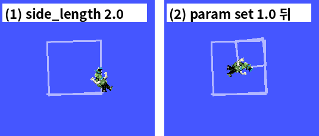

AI가 만든 ROS 2 노드를 검사 목록으로 고치기
📅 제출 마감 — 2026년 11월 29일 (일) 23:59
- 에이전트가 준 패키지가 빌드되고 거북이가 움직이면 다 된 것일까요?
colcon build는 성공했는데ros2 run·ros2 launch가 못 찾는다면 어느 파일의 어느 줄을 볼까요?ros2 param set이Set parameter successful이라고 답하면 노드가 정말 그 값으로 움직일까요?
turtlesim 거북이가 한 변 2m인 정사각형을 계속 그리는 ROS 2 패키지를 에이전트와 함께 만들고, 20·21회에서 노드를 만들 때마다 봤던 받은 코드 검사 목록(20회 6-3, 21회 ⑨절) 일곱 줄로 검사해 고치는 과제입니다. 에이전트가 만든 코드에는 빌드를 막지 않는 실수가 자주 섞여 있어서, 빌드되고 거북이가 움직여도 일곱 줄 중 몇 줄은 어긋나 있는 경우가 많습니다.
작업 A — 만들기
새 세션을 열고, 아래 표의 것을 갖춘 패키지를 에이전트에게 만들게 합니다. 무엇을 어떻게 부탁할지는 여러분이 씁니다. 이름 몇 개를 정해 둔 것은 채점할 때 같은 이름으로 찾기 위해서입니다. 나머지(속도 파라미터 이름, 코드 모양)는 자유입니다.
| 무엇 | 정해 둔 것 |
|---|---|
| 패키지 | ~/ros_ws/src/turtle_square — ROS 2 Jazzy · C++(rclcpp) · ament_cmake |
| 실행 파일·노드 이름 | turtle_square |
| 동작 | turtlesim의 거북이(/turtle1)가 한 변 2m인 정사각형을 그리며 계속 돈다 |
| 파라미터 | 변의 길이는 side_length |
| launch 파일 | launch/turtle_square.launch.py — turtlesim과 이 노드를 한 번에 띄운다 |
| 파라미터 파일 | config/turtle_square.yaml |
| # | 무엇을 합니다 |
|---|---|
| ① | 에이전트가 파일을 만들어 줍니다. 아직 고치지 않습니다 |
| ② | cd ~/ros_ws → colcon build --packages-select turtle_square → source install/setup.bash |
| ③ | ros2 launch turtle_square turtle_square.launch.py — turtlesim 창이 뜨고 거북이가 움직이는지 봅니다.
실패해도 괜찮습니다. 나온 것을 보고서 A-2에 붙입니다 |
앞에 띄운 launch를 끄지 않고 새 터미널에서 또 띄우면 turtle_square 노드가 둘이 되어
한 거북이에게 따로따로 명령을 보냅니다. 모서리 로그가 쉴 새 없이 쏟아지면 이것부터 의심해 보세요.
ros2 node list에 같은 이름이 두 번 나오면 그 경우입니다. 다시 띄울 때는 앞의 터미널에서 Ctrl+C로 먼저 끕니다.
작업 B — 검사 목록 일곱 줄
고치기 전에 일곱 줄을 한 번 훑고, 줄마다 O인지 X인지와 그렇게 본 근거를 적습니다. 근거는 「어느 파일의 어느 줄」이거나 「어떤 명령을 쳤더니 무엇이 나왔다」입니다. 그다음 X인 줄을 고칩니다. 직접 고쳐도 되고 에이전트에게 시켜도 됩니다. 고친 내용은 한 줄로 적습니다. 아래 코드는 일곱 줄을 다 지킨 판에서 그 줄에 해당하는 부분만 옮긴 것입니다.
B-1. 구독 콜백 인자는 ConstSharedPtr (20회 ⑤)
pose_sub_ = this->create_subscription<turtlesim::msg::Pose>(
"/turtle1/pose", 10,
[this](turtlesim::msg::Pose::ConstSharedPtr msg) { on_pose(msg); });콜백의 인자를 봅니다. const turtlesim::msg::Pose msg처럼 값으로 받으면 메시지가 올 때마다 복사합니다.
B-2. 변의 길이·속도는 파라미터 (21회 ②)
this->declare_parameter("side_length", 2.0); // 한 변의 길이 (m)
this->declare_parameter("linear_speed", 1.0); // 변을 따라갈 때의 속도 (m/s)
this->declare_parameter("angular_speed", 1.0); // 모서리에서 돌 때의 속도 (rad/s)숫자가 코드 한가운데 박혀 있으면 X입니다. ros2 param list /turtle_square에 이 이름들이 나오는지로 확인합니다.
B-3. 의존성은 package.xml과 CMakeLists.txt 양쪽에 (20회 6-1 · 21회 ⑧)
<depend>turtlesim</depend>
<exec_depend>ros2launch</exec_depend>find_package(turtlesim REQUIRED)
target_link_libraries(turtle_square PRIVATE
rclcpp::rclcpp ${geometry_msgs_TARGETS} ${turtlesim_TARGETS})#include하는 ROS 패키지(turtlesim · geometry_msgs)가 두 파일에 다 있어야 합니다. launch 파일이 있으면 package.xml에 ros2launch도 둡니다.
B-4. 실행 파일 설치 — install(TARGETS …) (19회)
install(TARGETS turtle_square
DESTINATION lib/${PROJECT_NAME})이 줄이 없어도 빌드는 성공합니다. 대신 ros2 run turtle_square turtle_square가 No executable found로 끝납니다.
B-5. 폴더 설치 — install(DIRECTORY …) (21회 ⑧)
install(DIRECTORY launch config
DESTINATION share/${PROJECT_NAME})한 번이라도 이 줄이 있는 판으로 빌드했으면 install/에 옛 파일이 남아 줄이 없어도 돌아갑니다. 그래서 지우고 다시 빌드한 뒤 launch로 확인합니다.
cd ~/ros_ws
rm -rf build/turtle_square install/turtle_square
colcon build --packages-select turtle_square
source install/setup.bash
ros2 launch turtle_square turtle_square.launch.pyB-6. 함수 하나는 20줄 이하 (20회 6-3)
void on_timer()
{
read_parameters();
geometry_msgs::msg::Twist cmd;
if (phase_ == Phase::Forward) { cmd.linear.x = drive_forward(); }
else { cmd.angular.z = turn_left(); }
cmd_pub_->publish(cmd);
}여는 중괄호 {부터 닫는 중괄호 }까지 셉니다. 넘으면 위처럼 일을 나눠 함수 여럿으로 만듭니다.
B-7. 실행 중에 ros2 param set으로 변의 길이가 바뀌는가 (21회 ③)
// 타이머가 부를 때마다 파라미터를 다시 읽는다
void read_parameters()
{
side_length_ = this->get_parameter("side_length").as_double();
linear_speed_ = this->get_parameter("linear_speed").as_double();
angular_speed_ = this->get_parameter("angular_speed").as_double();
}
생성자에서 한 번만 읽어 멤버에 넣어 두면, param set이 성공해도 멤버의 값은 그대로입니다(21회 ③절의 「저장소의 값과 멤버의 값」).
launch를 켜 둔 채 다른 터미널에서 아래를 치고, 명령의 답이 아니라 거북이가 그리는 정사각형으로 판단합니다.
다음 모서리부터 1m짜리를 그리면 O, 계속 2m를 그리면 X입니다.
ros2 param set /turtle_square side_length 1.0작업 C — 정사각형과 실행 중 변경
일곱 줄을 다 고쳤으면 B-5의 명령대로 지우고 다시 빌드해 launch로 띄웁니다.
거북이가 정사각형을 한 바퀴 그리면 turtlesim 창을 그림으로 남기고,
B-7의 param set을 친 뒤 작은 정사각형을 한 바퀴 그리면 한 장 더 남깁니다.

param set … 1.0을 친 다음 모서리부터 1m짜리를 그립니다. 큰 정사각형 안에 작은 정사각형이 겹치면 됩니다.AI와의 대화 요약
이번 과제는 코드를 에이전트가 만들므로 대화가 깁니다. 다른 과제처럼 요약해서 보고서 맨 뒤(D절)에 붙입니다. 세션을 닫기 전에 아래 글을 그대로 보내고, 출력을 고치지 않고 그대로 붙여 넣습니다. 세션을 여러 번 열었으면 세션마다 받아 이어 붙입니다.
이 세션을 끝내기 전에 지금까지의 대화를 아래 규칙대로 정리해 줘.
- 내가 보낸 메시지는 요약하지 말고 순서대로 원문 그대로 적어. 한 글자도 바꾸지 마.
- 네 대답은 중간 과정(탐색·시도·되묻기)을 빼고, 그 질문에 실제로 만들거나 고친 것만 두세 줄로 요약해.
파일을 만들거나 고쳤으면 파일 이름과 무엇을 바꿨는지 적어.
- 대화 순서대로 번호를 붙여 아래 형식으로 써. 이 형식 밖의 말은 붙이지 마.
### 1
**나:** (원문 그대로)
**AI:** (만들거나 고친 것 요약)
### 2
**나:** …
**AI:** …제출 양식
아래 「복사」 버튼을 누르면 양식이 통째로 복사됩니다. 보고서에 붙여 넣고 빈 칸을 채우면 됩니다.
명령과 출력은 친 명령과 화면에 나온 것을 통째로 붙여 넣습니다. 그림은 turtlesim 창 두 장뿐입니다. 괄호 안 안내 글은 지웁니다.
# HW5 제출 — 이름 ______ 학번 ______
## A. 만들기
### A-1. 에이전트에게 보낸 첫 프롬프트
```
(원문 그대로)
```
### A-2. 빌드하고 launch
```
여기에 colcon build 와 ros2 launch 를 친 명령과 나온 것을 그대로 붙여 넣습니다 (실패해도 그대로)
```
## B. 검사 목록 일곱 줄
(줄마다 세 칸을 채웁니다. O 였으면 「고친 것」은 「없음」)
### B-1. 콜백 인자 ConstSharedPtr
- O / X:
- 근거:
- 고친 것:
### B-2. 변의 길이·속도가 파라미터
- O / X:
- 근거 (ros2 param list /turtle_square 출력):
```
```
- 고친 것:
### B-3. 의존성 양쪽
- O / X:
- 근거:
- 고친 것:
### B-4. install(TARGETS)
- O / X:
- 근거:
- 고친 것:
### B-5. install(DIRECTORY launch config)
- O / X:
- 근거 (지우고 다시 빌드한 뒤 ros2 launch 의 출력):
```
```
- 고친 것:
### B-6. 함수 20줄 이하
- O / X:
- 근거 (가장 긴 함수의 이름과 줄 수):
- 고친 것:
### B-7. 실행 중 변경 (param set)
- O / X:
- 근거 (param set 명령과 출력, 그 뒤 거북이가 그린 것 한 줄):
```
```
- 고친 것:
## C. 결과
### C-1. turtlesim 창 두 장
(1) 한 변 2m 정사각형 — 그림을 붙입니다
(2) param set … 1.0 뒤 — 그림을 붙입니다
### C-2. 고친 뒤의 전체 소스
#### src/turtle_square.cpp
```cpp
```
#### CMakeLists.txt
```cmake
```
#### package.xml
```xml
```
#### launch/turtle_square.launch.py
```python
```
#### config/turtle_square.yaml
```yaml
```
## D. AI와의 대화 요약
(세션을 끝내기 전에 「AI와의 대화 요약」의 프롬프트를 보내고, 받은 출력을 고치지 않고 그대로 붙입니다. 세션이 여럿이면 이어 붙입니다)
### 1
**나:**
**AI:**
제출 방법과 점수
채운 보고서를 PDF 한 개로 만들어 LMS에 올립니다.
파일 이름은 HW5_이름_학번.pdf로,
HW5_홍길동_20251234.pdf처럼 자기 이름과 학번을 넣으면 됩니다.
| 무엇 | 점수 | 어떻게 봅니다 |
|---|---|---|
| 제출 | 10점 | 기한 안에 냈으면 받습니다 |
| 보고서 | 25점 | 일곱 줄마다 O/X·근거·고친 것이 채워져 있는지, 그림 두 장, 고친 소스가 일곱 줄을 지키는지와 AI와의 대화 요약이 있는지를 봅니다 |
| 확인 퀴즈 | 15점 | 제출 후 다음 수업 시간에 짧게 봅니다. 객관식이고 정답은 그 자리에서 공개합니다 |
| 합계 | 50점 |